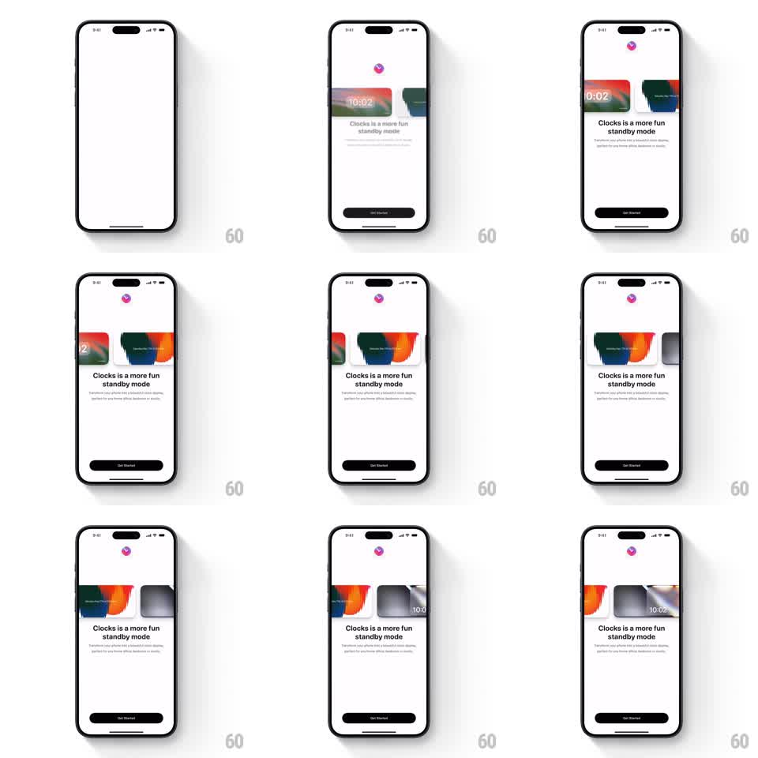

Media
Frame-by-frame

Rebuild this animation 1:1: Clocks' splash - a white screen parts as the app icon slides up to the top, the headline "Clocks is a more fun standby mode" and subcopy fade in, a horizontal carousel of clock cards auto-scrolls behind the text, and a black Get Started button slides up at the bottom.

Rebuild this animation 1:1: Clocks' splash - a white screen parts as the app icon slides up to the top, the headline "Clocks is a more fun standby mode" and subcopy fade in, a horizontal carousel of clock cards auto-scrolls behind the text, and a black Get Started button slides up at the bottom. ## Integration Integration: stack-agnostic spec - springs given as stiffness/damping, timed motions as duration + curve; map every value to your framework and animation library of choice. ## Scene White splash that becomes the onboarding page: small Clocks icon pinned top-center, an auto-scrolling row of clock cards (gradient landscapes, abstract paint strokes, minimal faces - some showing 10:02), "Clocks is a more fun standby mode" headline with two-line subcopy, and a black Get Started button. ## Motion spec Pattern: splash reveal with auto-scrolling card carousel. - The icon pops in top-center (scale 0 -> 1.1 -> 1, spring ~320/16). - The headline fades up (250ms), then the subcopy (200ms). - The card carousel enters from the right (translateX 60pt -> 0, 350ms ease-out) and immediately begins auto-scrolling left at ~40pt/s, looping seamlessly. - Cards in the carousel have a slight vertical stagger (alternate cards offset 8pt) and each card's artwork is its own mini-composition with the time overlaid. - Get Started slides up last (280ms ease-out) and stays pinned while the carousel keeps scrolling. ## Calibration - The auto-scroll is constant speed and infinite - no easing bumps at the loop point. - Text stays static and readable above the moving cards. ## Reduced motion Carousel shows a static row of three cards; no auto-scroll. ## Don't miss - The carousel runs behind the text block - text is layered over the scroll zone's fade mask. - Cards vary in artwork but share the same height and corner radius.